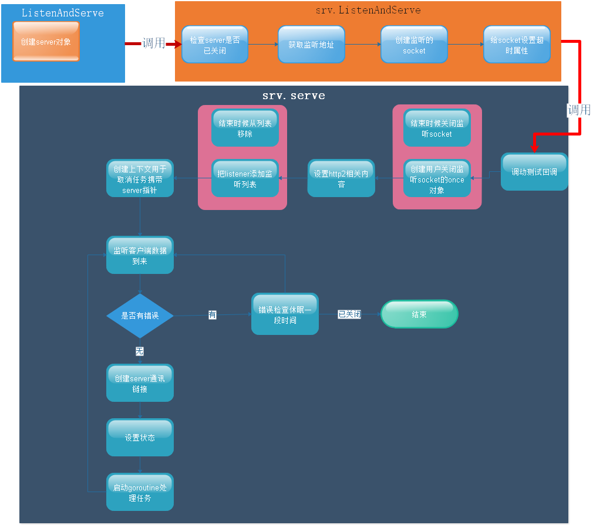

ListenAndServe阅读
func ListenAndServe(addr string, handler Handler) error {
//1. 创建server
server := &Server{Addr: addr, Handler: handler}
//2. 启动server
return server.ListenAndServe()
}
注意：创建一个server，启动server，我们也可以按照这2个步骤去创建一个web服务
// 基类Closer接口，关闭所有链接停止服务
type Closer interface {
Close() error
}
// 检查服务是否存活，里面定义了接口，接口的另类定义使用
// 奇怪的行为，不确定为什么这么做
func http2h1ServerKeepAlivesDisabled(hs *Server) bool {
var x interface{} = hs
// 临时定义接口，使用【奇怪的使用方法】
type I interface {
doKeepAlives() bool
}
if hs, ok := x.(I); ok {
return !hs.doKeepAlives()
}
return false
}
//Server
// A Server defines parameters for running an HTTP server.
// The zero value for Server is a valid configuration.
type Server struct {
Addr string // 监听的TCP地址
Handler Handler // 注册的路由处理方法
// 如果服务需要支持https协议 那么需要相应的配置
TLSConfig *tls.Config
//读超时设置
ReadTimeout time.Duration
// 读取请求头超时设置
ReadHeaderTimeout time.Duration
// 写超时
WriteTimeout time.Duration
// 请求直接最长的空闲时长
IdleTimeout time.Duration
// 请求头最大的容量
MaxHeaderBytes int
// HTTPS协议相关
TLSNextProto map[string]func(*Server, *tls.Conn, Handler)
// 可以添回调函数，当客户端处于哪个状态时候可以执行某些动作
ConnState func(net.Conn, ConnState)
// 错误日志器，不设置默认使用内置logger模块
ErrorLog *log.Logger
//原子操作，是否保持长连接
disableKeepAlives int32 // accessed atomically.
//原子操作，服务要关闭了
inShutdown int32 // accessed atomically (non-zero means we're in Shutdown)
// https相关操作 用于初始化
nextProtoOnce sync.Once // guards setupHTTP2_* init
nextProtoErr error // result of http2.ConfigureServer if used
// 互斥锁 保证资源的安全
mu sync.Mutex
// 服务套接字表，监听socket表
listeners map[*net.Listener]struct{}
// 存活的客户端链接表
activeConn map[*conn]struct{}
//用于通知服务关闭了
doneChan chan struct{}
// 注册服务器关闭执行的一些行为
onShutdown []func()
}
注意：一般创建server只需要Addr与handler即可
ListenAndServe阅读
监听并启动服务
func (srv *Server) ListenAndServe() error {
// 判断服务器是不是已经关闭了
if srv.shuttingDown() {
return ErrServerClosed
}
// 获取要绑定监听的地址
addr := srv.Addr
if addr == "" {
addr = ":http"
}
// 创建用于监监听socket链接
ln, err := net.Listen("tcp", addr)
if err != nil {
return err
}
// tcpKeepAliveListener 设置监听超时，在accept的时不会一直阻塞 设置一个超时操作
//启动服务
return srv.Serve(tcpKeepAliveListener{ln.(*net.TCPListener)})
}
srv.Serve源码阅读
func (srv *Server) Serve(l net.Listener) error {
// 测试用的钩子函数，其他时候没有用的
if fn := testHookServerServe; fn != nil {
fn(srv, l) // call hook with unwrapped listener
}
// sync.once 创建一个once对象，用于防止多次关闭链接
l = &onceCloseListener{Listener: l}
// 结束的时候关闭监听socket
defer l.Close()
// 设置http2相关的设置
if err := srv.setupHTTP2_Serve(); err != nil {
return err
}
// 把监听socket添加监听表
if !srv.trackListener(&l, true) {
return ErrServerClosed
}
// 结束的时候从监听表删除
defer srv.trackListener(&l, false)
// 设置临时过期时间，当accept发生 错误的时候等待一段时间
var tempDelay time.Duration // how long to sleep on accept failure
// 设置context 主要用于取消任务
baseCtx := context.Background() // base is always background, per Issue 16220
// 注意ctx把server本身传递进去了，用于传递
ctx := context.WithValue(baseCtx, ServerContextKey, srv)
// 循环监听客户端到来
for {
// accept 阻塞等待客户单到来
rw, e := l.Accept()
// 错误后处理逻辑
if e != nil {
// 尝试检查下服务是不是关闭了
select {
// 关闭则返回错误
case <-srv.getDoneChan():
return ErrServerClosed
default:
}
// 检查错误类型，如果是链接被重置
if ne, ok := e.(net.Error); ok && ne.Temporary() {
// 设置超时
if tempDelay == 0 {
tempDelay = 5 * time.Millisecond
} else {
tempDelay *= 2
}
if max := 1 * time.Second; tempDelay > max {
tempDelay = max
}
// 输出重新等待
srv.logf("http: Accept error: %v; retrying in %v", e, tempDelay)
// 休眠一段时间
time.Sleep(tempDelay)
continue
}
return e
}
// 没有错误设置tempDelay为0
tempDelay = 0
// 创建server连接，server连接包含了与客户端通讯的socket以及server相关的信息
c := srv.newConn(rw)
// 更新链接状态
c.setState(c.rwc, StateNew) // before Serve can return
// 启动goroutine处理socket
go c.serve(ctx)
}
}
server conn结构体阅读
// 服务端链接结构体
type conn struct {
// 链接绑定服务
server *Server
// 用于取消任务的ctxFunc
cancelCtx context.CancelFunc
// socket 通讯用的底层socket
rwc net.Conn
// 客户端地址127.0.0.0:5678
remoteAddr string
// tls 状态
tlsState *tls.ConnectionState
// werr is set to the first write error to rwc.
// 第一次写出现错误的时候设置
werr error
// r is bufr's read source.
// 用于读取请求的对象，主要用于读取数据的
r *connReader
// bufr reads from r.
// r读取的数据存储buf
bufr *bufio.Reader
// bufw writes to checkConnErrorWriter{c}, which populates werr on error.
// 写buf
bufw *bufio.Writer
// lastMethod is the method of the most recent request
// on this connection, if any.
// 最后一次请求，方法 是post还是其他等
lastMethod string
// 当前的请求
curReq atomic.Value // of *response (which has a Request in it)
// 当前cnn状态
curState struct{ atomic uint64 } // packed (unixtime<<8|uint8(ConnState))
//保护hijackedv
mu sync.Mutex
// hijackedv is whether this connection has been hijacked
//表示是否支持用户劫持链接【主要用于切换协议的】
hijackedv bool
}